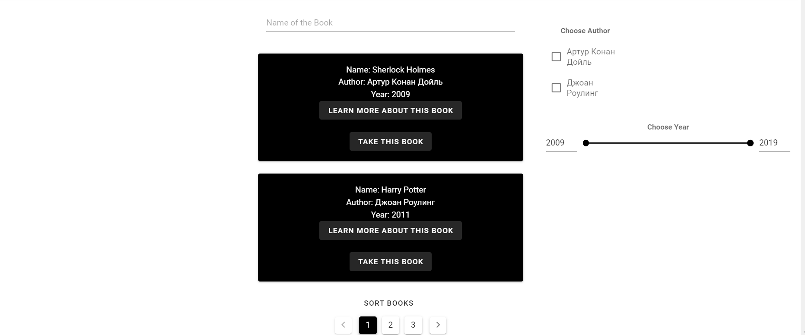

Пагинация
Для пагинации был создан компонент Pagination.vue
Pagination.vue
<template>
<div>
<v-pagination
v-model="currentPage"
:length="totalPages"
white
color="black"
@input="changePage(currentPage)"
></v-pagination>
</div>
</template>
<script>
export default {
name: 'Pagination',
props: ['total', 'item', 'ordered', 'check', 'searching'],
data () {
return {
search: this.searching,
order: this.ordered,
checked: this.check,
currentPage: 1
}
},
computed: {
totalPages () {
return this.item !== 2 ? Math.ceil(this.total / 2) : Math.ceil(this.total / this.item)
}
},
methods: {
changePage (pageNumber) {
this.currentPage = pageNumber
this.$emit('page-changing', pageNumber)
}
}
}
</script>
В основном компоненте пагинация была использована так:
template
<Pagination :total="total" :item="books.length" :ordered="order" :searching="search" :check="checked" @page-changing="loadBook"/>
script
import Pagination from '../components/Pagination'
export default {
return {
...
page: 1,
total: 0,
...
}
},
components: { Pagination },
